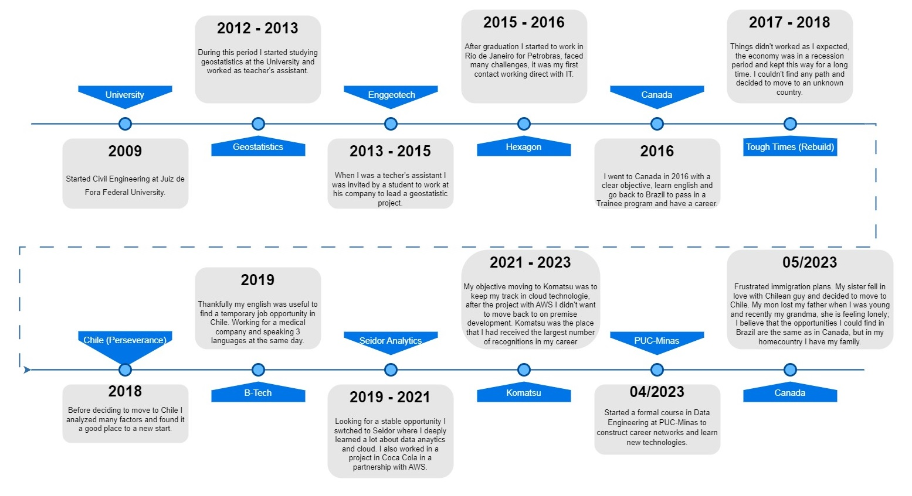

About me
My life can be summarized in two words 'rebuild' and 'perseverance'.
My name is Pedro, I'm 33, married, and currently residing in Toronto. I initially studied Civil Engineering at university but eventually transitioned to the field of data and analytics. During my university years, I gained valuable knowledge in geostatistics, which ignited my passion for the world of data. My passions include my wife, who has stood by me through numerous challenges, spending time with friends and colleagues, swimming, and my ongoing journey to learn how to play the guitar.
Why rebuild?
...
Why perseverance?
...
My path...
Throughout my career, I've worked in various environments, requiring me to adapt and confront numerous challenges. In the following lines, I intend to highlight the most important aspects of each position I've held.
-Data Engineer
...
-Business Intelligence Analyst
...
-GIS Analyst
...
